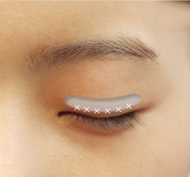

都市美眼之双眼皮
- 埋线法
- 韩式三点法
- 全切法
都市埋线法？
不易松开，鲜明自然的双眼皮弧线！
都市埋线法与传统的埋线法相比，多节更牢固的固定。
根据每个人眼部情况的不同，可选用多节埋线、多节连续埋线、单节连续埋线等对手术者来说效果最佳
的手术方法，术后满意度极高。
都市埋线法与传统的埋线法相比，多节更牢固的固定。
根据每个人眼部情况的不同，可选用多节埋线、多节连续埋线、单节连续埋线等对手术者来说效果最佳
的手术方法，术后满意度极高。
首先根据者想要的高度和模样，整形外科专家设计双眼皮弧线，取几个点。
通过几个点，都市用独特的方法，使皮肤和上睑提肌产生自然粘连。
用线缝合上眼睑皮肤内外。
自然美丽的双眼皮形成了。
都市韩式三点？
所谓韩式三点法是在塑造双眼皮弧线的同时，在眼上三点定位，通过做出1-2mm的微小切口，
祛除多余的脂肪和肌肉组织的手术方法。和切开法相比，切口非常小，创伤、浮肿少，
同样可以祛除厚重的脂肪，使眼皮变薄的同时塑造迷人的双眼皮。脂肪或肌肉组织多时，
用埋线法手术，双眼皮有可能松开，这时可以选择部分切开法。
祛除多余的脂肪和肌肉组织的手术方法。和切开法相比，切口非常小，创伤、浮肿少，
同样可以祛除厚重的脂肪，使眼皮变薄的同时塑造迷人的双眼皮。脂肪或肌肉组织多时，
用埋线法手术，双眼皮有可能松开，这时可以选择部分切开法。

整形专家经过周密诊断后，设计手术部位。
通过微小切口，去除多余的脂肪和肌肉组织。
缝合眼皮和肌肉。
这样就形成了自然明媚的双眼皮。
都市全切法？
全切法是沿上睑皮肤预先设计好的线做切口，切除松弛的皮肤和多余的脂肪及肌肉，
塑造双眼皮弧线的方法。切开线隐藏在双眼皮弧线内，经过一段时间双眼皮定位后，切口疤痕几乎看不出来。
全切法双眼皮手术尤其适合眼皮厚，或眼皮松弛下垂，且眼皮内肌肉和脂肪层发达，有明显肿眼泡者。
根据每个人眼部情况的不同有区别的实施手术，效果更有保障。
塑造双眼皮弧线的方法。切开线隐藏在双眼皮弧线内，经过一段时间双眼皮定位后，切口疤痕几乎看不出来。
全切法双眼皮手术尤其适合眼皮厚，或眼皮松弛下垂，且眼皮内肌肉和脂肪层发达，有明显肿眼泡者。
根据每个人眼部情况的不同有区别的实施手术，效果更有保障。
整形专家精确诊断后，设计手术部位。
通过细小的切口，去除多余的脂肪和部分肌肉组织。
连接眼皮和肌肉后缝合。
这样就打造完成自然鲜明的双眼皮了。
都市美眼之开眼角
都市美眼之去眼袋
- 激光祛眼袋
- 韩式微创祛眼袋
都市激光祛眼袋？
激光祛眼袋恢复您的魅力，激光祛眼袋的副作用几乎没有。
都市激光祛眼袋运用先进等离子激光，结合权威医师专业技术，精准定位术区，360°环形扩散溶脂，
再使用激光气化收缩真皮组织，整个手术过程只需10分钟左右，
对皮肤表面无损伤，适应范围广，不易复发。
都市激光祛眼袋运用先进等离子激光，结合权威医师专业技术，精准定位术区，360°环形扩散溶脂，
再使用激光气化收缩真皮组织，整个手术过程只需10分钟左右，
对皮肤表面无损伤，适应范围广，不易复发。

整形专家根据手术者的面部特征，消毒和局部麻醉。
精准定位手术区域。
用仪器扩散溶脂，
再收缩真皮组织。
利用午餐时间的无创无痕的激光祛眼袋完成了。
都市韩式微创祛眼袋？
眼底膨出的脂肪让人显老，是形成眼袋的原因。都市韩式微创祛眼袋是一种微创性的祛眼袋方法，是在医学的高速
发展中，萃取韩式医学美容微创自然的技术理念，在大量的临床经验基础上，根据不同年龄段人群眼袋问题，专门
研制出了微创祛眼袋方法。
结膜切开，无需担心留疤！神采焕发！皮肤下垂NO！
发展中，萃取韩式医学美容微创自然的技术理念，在大量的临床经验基础上，根据不同年龄段人群眼袋问题，专门
研制出了微创祛眼袋方法。
结膜切开，无需担心留疤！神采焕发！皮肤下垂NO！
都市韩式微创祛眼袋手术方法经过整形专家的精密诊断后，设计手术部位。
从眼睛内侧结膜切开。不是眼皮，而是结膜，术后不留疤。
去除松弛的皮肤和多余的脂肪，重新配置并固定剩余的脂肪。

止血后，用可溶线缝合。
都市美眼之上睑下垂上提术
- 神经性上睑下垂
- 眼皮松弛上睑下垂
都市神经性上睑下垂？
老化使上睑皮肤弹性降低，眼皮下垂时进行的手术。
都市的重睑切口上睑松弛矫正术，将先进上睑下垂矫正技术与东方人面部美学特征充分融合，把上眼睑的睑板悬吊
固定于眼部自身组织CFS上，其力量方向与人体自然上提睑肌LPS一致，区别传统额肌瓣矫正术利用额部肌肉力量垂
直向上提眼皮，无粘附不牵扯，动态提升上眼睑高度。
都市的重睑切口上睑松弛矫正术，将先进上睑下垂矫正技术与东方人面部美学特征充分融合，把上眼睑的睑板悬吊
固定于眼部自身组织CFS上，其力量方向与人体自然上提睑肌LPS一致，区别传统额肌瓣矫正术利用额部肌肉力量垂
直向上提眼皮，无粘附不牵扯，动态提升上眼睑高度。
经整形专家的精密诊断后，设计手术部位。
在上眼皮做切口，去除松弛的皮肤，多余的脂肪和部分下垂的眼轮匝肌。

最后连接眼皮和上眼提肌后缝合。
都市眼皮松弛上睑下垂？
在渐渐老化的过程中，眼皮会不断松弛下垂，给人一种老气疲惫的感觉。
此外，眼皮下垂也会阻挡视线，不自觉的借助额头肌肉睁眼，长此以往，抬头纹越来越深。
眉部切口上睑松弛矫正术是在眉上眉毛边缘或眉下眉毛边缘做切口，提紧上睑皮肤，改善皱纹的手术。
因为切口在眉毛边缘，具有隐蔽看不来的优点。
此外，眼皮下垂也会阻挡视线，不自觉的借助额头肌肉睁眼，长此以往，抬头纹越来越深。
眉部切口上睑松弛矫正术是在眉上眉毛边缘或眉下眉毛边缘做切口，提紧上睑皮肤，改善皱纹的手术。
因为切口在眉毛边缘，具有隐蔽看不来的优点。
眉下眉毛边缘切口
眼睛和眉毛间距较宽时
经整形专家的精密诊断后，设计手术部位。
在眉下眉毛边缘做切口。

去除多余的皮肤和肌肉，将下方的肌肉提升至骨膜处固定。
向上提紧上睑皮肤后缝合。
眉上眉毛边缘切口
眼睛和眉毛间距较窄时

经整形专家的精密诊断后，设计手术部位。
在眉上眉毛边缘做切口。
去除多余的皮肤和肌肉，将下方的肌肉提升至骨膜处固定。
向上提紧上睑皮肤后缝合。